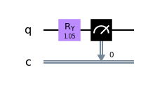

Per creare un circuito quantistico si usano dei gates che qui vengono esplicati. Nel computer quantistico per
eseguire i gates si esegue una fase detta Pulse che richiede una diversa quantità di energia per ciascun gate.
Hadamard
Questo gate si utilizza per creare la superposition, si forza il qubit a muoversi dallo stato ∣0⟩
per poi misurarne il valore e si ha circa il 50% di possibilità di avere come risultato ∣0⟩ e 50% di avere ∣1⟩.
Nello spazio vettoriale di Hilbert il gate H viene rappresentato con la seguente formula:
Matematicamente, tramite l'algebra vettoriale quando applichiamo questo gate eseguiamo le seguenti operazioni sui 2 qubit:
Qui vediamo un esempio di un circuito a cui applichiamo il gate H :
Sotto vediamo l'esito di una simulazione e la distribuzione dei risultati su 5000 shots:
X GATE
Il gate X è un bit-flip gate nel senso che inverte il valore che trova in input. Se input = ∣0⟩ l'output diviene
∣1⟩ e viceversa.
Il risultato si ottiene moltiplicando algebricamente X con ∣0⟩ e con ∣1⟩.
Equivale ad una rotazione nell'asse x nella sfera di Bloch π radians.
Y GATE
Il Pauli Y gate equivale al Ry. Equivale anche agli effetti conbinati di X e Z.
Z GATE
Il gate Z effettua una rotazione di π radians nell'asse della z.
CX GATE
Il controlled-NOT gate opera su più qubits, uno control qubit e gli altri sono i target qubit.
Se il control qubit è nello stato ∣1⟩ esegue il gate X nel target qubit.
Se il control qubit è in superposition il C-NOT gate crea l'entanglement.
ID GATE
L'identity gate è un gate che non fa nulla al qubit. Tutto rimane inalterato.
RX GATE
Questo gate genera una rotazione del qubit state nell'asse delle x nella Bloch sphere dell'angolo espresso in radianti che viene inserito come input.
RY GATE
Questo gate genera una rotazione del qubit state nell'asse delle y nella Bloch sphere dell'angolo espresso in radianti che viene inserito come parametro in input.

RZ GATE
Questo gate genera una rotazione del qubit state nell'asse delle Z nella Bloch sphere dell'angolo espresso in radianti che viene inserito come input.
S GATE
Il gate S equivale al Rz gate per l'angolo π/2. Muove informazioni tra gli assi x ed y.
SDG GATE
Il gate SDG(S dagger gate) è l'inverso del gate S. E' l'equivalente del gate Rz per l'angolo -π/2. Anche questo gate muove informazioni tra gli assi x ed y.
T GATE
The T gate è uguale ad una rotazione di Rϕ con ϕ = π/4.
TDG GATE
Il T dagger gate è l'inverso del gate T.
CH GATE
Il controlled-Hadamard gate, come il controlled-NOT, esegue un controllo sul control qubit ed esegue un H gate sul target qubit se il control qubit è nello stato ∣1⟩.
CZ GATE
Il controlled-Z gate, esegue un controllo sul control qubit ed esegue un Z gate sul target qubit se il control qubit è nello stato ∣1⟩.
CRZ GATE
Il controlled-Rz gate, esegue un controllo sul control qubit ed esegue una rotazione Rz sul target qubit se il control qubit è nello stato ∣1⟩.
CCX GATE
Il ccX(Controlled-Controlled NOT gate) conosciuto anche come Toffoli gate ha 2 control qubits ed un target. Se entrambi i 2 control qubit sono nello stato ∣1⟩ applica un X gate nel target qubit.
SWAP GATE
Lo SWAP gate esegue uno swaps dello stato tra 2 qubits. In questo modo posso ad esempio fare un entanglement tra 2 qubits che non sono fisicamente vicini.
Barrier operation
Per rendere il circuito più efficiente il barrier gate previene la congiunzione dei gates.
∣0⟩ operation
L'operazione di reset riporta un qubit allo stato precedente.
IF operation
Permette di condizionare l'applicazione di un gate.
Z measurement
Fa collassare il qubit nello stato ∣0⟩ o ∣1⟩ per poi misurarne lo stato.
U3 GATE
I tre parametri (theta θ, phi φ e lamda λ) e permettono di operare contemporaneamente su di un singolo qubit.
U2 GATE
I 2 parametri (φ, λ) permettono 2 diverse rotazioni nel gate.
U1 GATE
Con λ si realizza una rotazione come con il gate Rz.